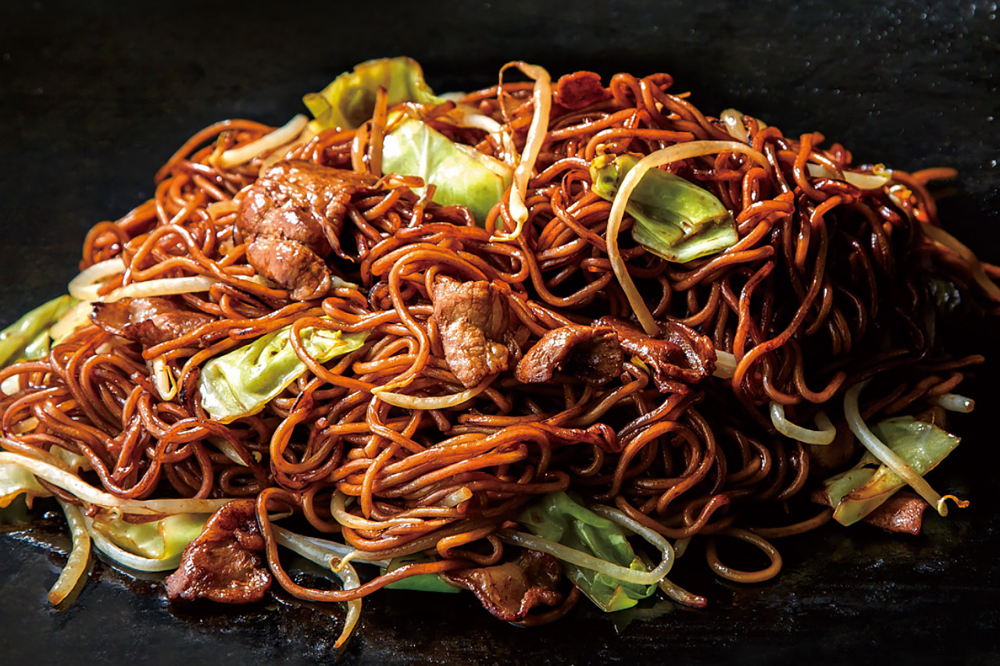

Pork Yakisoba

Yakisoba can be made either healthy or more akin to soul food, depending on the amount of oil and fat used. You can even replace the pork with chicken for a leaner but still delicious meal.
Ingredients
- 300g noodles, fresh
- 1 tbs sesame oil
- 2 garlic cloves
- 200g pork fillet thinly sliced
- 150g cabbage or Chinese cabbage
- 30ml sweet soy sauce or gluten-free equivalent
Steps
- Heat noodles according to packet instructions. Drain and set aside.
- Heat a wok or large frypan over medium-high heat. Add oil, garlic and pork and stir-fry for 3-4 minutes until cooked. Transfer to a plate.
- Add cabbage to wok and cook for 2-3 minutes until crisp-tender.
- Return pork to wok with drained noodles and sweet soy sauce. Toss to combine for a minute until heated through.
- Serve.
Home